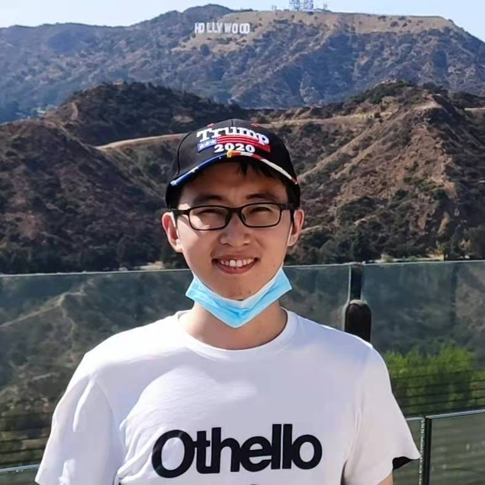

I am currently working on Large Language Models at ByteDance Seed, with a focus on scaling, optimization, and post-training.
My previous work also spans AI for Science. I established the cryo-EM research team at ByteDance, where our first work, CryoSTAR, was accepted by Nature Methods. I led the development of SeedFold, the first model to outperform AlphaFold3.
I received my Master's degree from Fudan NLP (2021) under Prof. Xiaoqing Zheng. I visited UCLA in 2020, where I worked with Prof. Cho-Jui Hsieh and Prof. Kaiwei Chang on model security. Since joining ByteDance in 2021, I have worked with Prof. Hao Zhou on machine translation and Prof. Quanquan Gu on AI for Science.
Email: zhouyi.naive[-]bytedance[-]com / dugu9sword[-]gmail[-]com / yizhou17[-]fudan[-]edu[-]cn